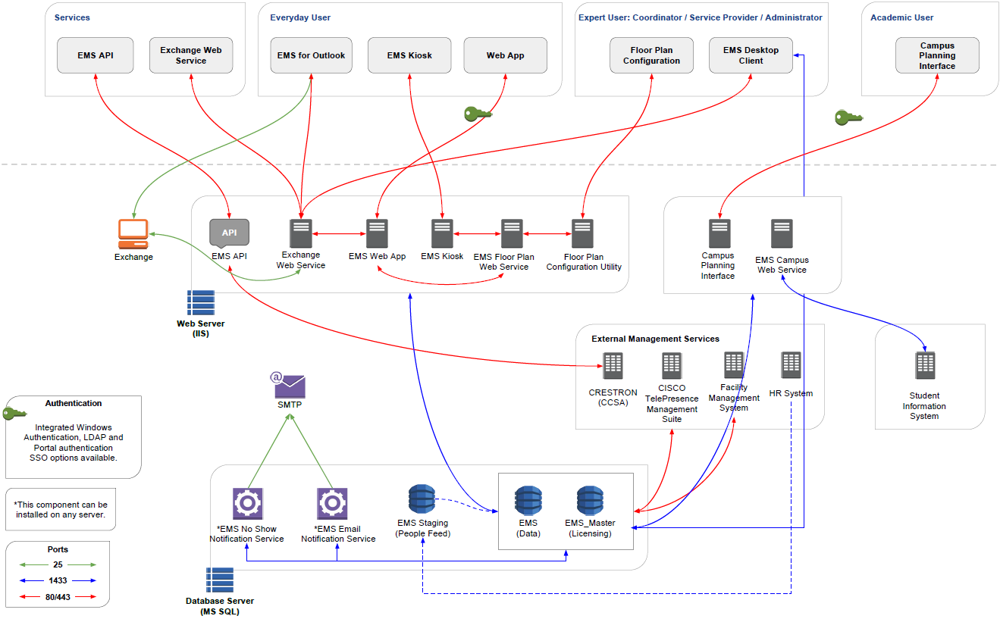

This section covers the installation and maintenance of
If you are new to
The Installation, Configuration, and User Guides for the EMS Desktop Client apply to all of the following editions:
These editions are controlled and based on the EMS Desktop Client; however, their capabilities and features vary and are noted throughout the documentation.
This topic provides the following information:
See Also: Contact Support
There are two different user types in
An Everyday User Reservation is any reservation that a user has submitted through EMS Web App.
The everyday user reservation searching tool in the EMS Desktop Client is identical to the Browser searching tool with one exception: when the Browser opens for the first time, the Browse for function is set to Reservations whereas the Everyday User Reservation tool is set to Everyday User Reservations. As a result, although this section is written from the perspective of using the Browser, all the information can be applied when using the Everyday User Reservation searching tool.
To open this tool in EMS Desktop Client, click the Everyday User Reservations icon on the EMS toolbar.
The EMS Desktop Client is the foundation for a broad range of components, services, web applications, APIs, add-ons, and integrations.

If you are upgrading to a newer version of EMS, please encourage users at your facility to read the release notes before they begin working with the new version of the software. Doing so will minimize the amount of time it takes them to get “up-to-speed” with the new release and help them benefit from new features and functions that they might not otherwise discover.
All the EMS-related components you have licensed must be upgraded with this release.
Primary Contacts can obtain the license file from the Support Center area on www.emssoftware.com. This license file is required to activate your EMS software and is required for new and existing customers.
Please keep in mind that some discrepancies (e.g., differences in behavior and/or exclusions) will exist.